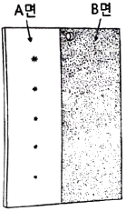
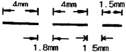

침투비파괴검사기사 (2018-03-04 기출문제)
1과목: 비파괴검사 개론
1. 자분 집적 모양의 식별성을 향상시키기 위해 고려할 사항이 아닌 것은?
- 식별성은 백그라운드와의 대비에 의해 좌우되므로 형광자분을 사용할 때는 형광휘도가 낮은 것을 선택하여 사용해야 한다.
- 불연속부에 충분한 양의 자분이 흡착되도록 균일하게 자분을 적용해야 한다.
- 적정한 자화로 불연속부로부터 충분한 누설자속이 형성되도록 해야 한다.
- 관찰하기 편리한 환경에서 눈과 시험면의 거리를 두고 바른 관찰을 해야 한다.
(정답률: 88%)

2. 외경 30mm, 두께 2.5mm의 튜브를 직경 20mm인 코일이 감겨있는 내삽형 탐촉자로 와전류탐상시험할 때, 충전율은 얼마인가?
- 0.44
- 0.64
- 0.67
- 0.80
(정답률: 56%)
3. 다음 중 방사선투과시험에서 X선 필름의 감도를 높이고 노출시간을 단축시키며, 상질을 개선하기 위해 사용되는 것은?
- 계조계
- 증감지
- 투과도계
- 필름관찰기
(정답률: 76%)
4. 다음 중 비파괴평가법과 그 기본원리의 연결이 잘못된 것은?
- 방사선투과검사-투과성
- 초음파탐상검사-펄스반사
- 와전류탐상검사-전자유도작용
- 중성자투과검사-탄성파
(정답률: 83%)
5. 다음 중 초음파탐상검사에서 결함을 가장 쉽게 검출할 수 있는 탐상시험은?
- 거친 다듬질 후
- 정밀 다듬질 전
- 표면이 거칠어지는 열처리 전
- 감쇠를 적게 할 수 있는 열처리 후
(정답률: 66%)
6. 고속도공구강(SKH2)의 대표적인 조성으로 옳은 것은?
- 18%Mo-4%W-1%Cr
- 18%Mo-4%Cr-1%Mn
- 18%W-4%Cr-1%V
- 18%W-4%Mo-1%V
(정답률: 55%)
7. 항온열처리인 마퀜칭(Marquenching)처리를 한 후 얻어지는 조직은?
- 펄라이트
- 마텐자이트
- 베이나이트
- 투루스타이트
(정답률: 82%)
8. 냉간가공된 금속에 대한 설명으로 틀린 것은?
- 냉간가공으로 금속결정 내의 전위는 감소한다.
- 융점이 낮은 금속에서는 가공 후 가열하지 않고 실온에 발치만하여도 회복이 일어난다.
- 냉간가공된 금속을 어닐링하면 회복, 재결정, 결정립성장의 단계를 거친다.
- 냉간가공으로 변형된 금속을 가열하면 그 내부에 새로운 결정립의 핵이 생기고 치환되는 과정을 재결정이라고 한다.
(정답률: 41%)
9. 금속을 원자로용, 고융점 구조재료, 반도체, 알칼리토류군(群)으로 분류할 때 반도체군에 해당되는 것은?
- W, Re
- Na, Li
- Ge, Si
- U, Th
(정답률: 73%)
10. 절삭성을 높이기 위한 쾌삭 황동(free cutting brass)은 황동에 어떤 원소를 1.0~3.5%정도 첨가시킨 합금인가?
- P
- Si
- Sb
- Pb
(정답률: 52%)
11. 재료시험법 중 동적시험에 해당되는 것은?
- 인장시험(Tensile test)
- 충격시험(Impact test)
- 전단시험(Shearing test)
- 압축시험(Compression test)
(정답률: 72%)
12. 백금(Pt)에 대한 설명으로 옳은 것은?
- 백금은 회백색의 체심입방정 금속이다.
- 비중은 6.7이고, 용융점은 670℃ 정도이며 내식성이 좋으므로 화학공업에 사용한다.
- 백금은 산화되지 않으나 P, S, Si 등의 알칼리, 알칼리토금속의 염류에는 침식된다.
- 45%~85%Rh 합금은 열전대로 사용하며, 0.8%~5%Pb의 백금합금은 장식용으로 사용한다.
(정답률: 64%)
13. 희토류 원소 또는 Th 첨가로 크리프 특성, 내열성 및 주조성이 좋아 제트엔진(Jet engine) 등의 구조용 재료로 가장 많이 사용되는 합금은?
- Al 합금
- Mg 합금
- Ni 합금
- Zn 합금
(정답률: 65%)
14. Al-Cu 합금을 용체화처리한 다음 급냉한 후 시효처리할 대 석출되는 금속간화합물은?
- Cu2O
- CuAl2
- CO2Al
- Al2O3
(정답률: 69%)
15. 경도시험과 그 영문 표기가 틀린 것은?
- 쇼어 경도 : HS
- 비커즈 경도 : HV
- 브리넬 경도 : HB
- 로크웰 경도 : HL
(정답률: 70%)
16. 용접작업에서 피닝(peening)을 실시하는 목적으로 옳은 것은?
- 슬래그를 제거하고 용접부의 강도를 높인다.
- 소성가공에 의한 용접부의 경도를 증가시킨다.
- 가공경화에 따른 용접부의 인정을 증가시킨다.
- 비드 표면층에 성질 변화를 주어 용접부의 인장 잔류응력을 완화시킨다.
(정답률: 64%)
17. 10분의 용접작업 중 6분 동안 아크를 발생시키고, 4분 동안 아크를 발생시키지 않고 쉬었다면, 이 용접기의 사용률은?
- 20%
- 40%
- 60%
- 100%
(정답률: 85%)
18. 일반적인 서브머지드 아크 용접에 대한 설명으로 옳은 것은?
- 용입 깊이가 얕다.
- 사용 용접전류가 적어 용접능률이 낮다.
- 아크가 눈에 보이브로 용접상태를 확인하면서 용접할 수 있다.
- 용접선이 길고, 연속용접이 가능한 부재에 적용하는 것이 적합하다.
(정답률: 72%)
19. 일반적인 플라스마 아크 용접의 특징으로 틀린 것은?
- 용접속도가 빠르다.
- 용접비드의 폭이 넓다.
- 열에너지의 집중이 좋다.
- 각종 재료의 용접이 가능하다.
(정답률: 63%)
20. 금속 중에서 용접 입열이 일정한 경우에 열전도율이 큰 순서로 나열한 것 중 옳은 것은?
- 구리＞알루미늄＞스테인리스강
- 연강＞스테인리스강＞알루미늄
- 스테인리스강＞구리＞알루미늄
- 알루미늄＞스테인리스강＞구리
(정답률: 84%)
2과목: 침투탐상검사 원리
21. 다음의 불연속중에서 부적절한 세척과정에 의해 누락되기 쉬운 것은?
- 새척과정은 불연속의 검출과정과는 무관
- 얕고 넓게 퍼진 결함
- 단조 겹침(Forging Lap)
- 깊이 위치한 점식성 결함
(정답률: 72%)
22. 침투탐상검사가 완료된 후 특정 조작의 잘못이 발견되어 결과의 신뢰성이 의심스러울 경우 가장 적절한 조치는?
- 잘못된 조작을 찾아낸다.
- 검사원을 교체하여 검사한다.
- 검사절차 인정을 다시 실시한다.
- 원래 검사 절차에 따라 재검사를 실시한다.
(정답률: 85%)
23. 침투지시모양이 가장 뚜렷하게 나타나는 것은?
- 루트 균열
- 담금질 균열
- 내부 기공
- 내부 균열
(정답률: 59%)
24. 침투지시모양의 평가 시 검사자가 알아야 하는 일반적 사항이 아닌 것은?
- 필렛(fillet)부 보다 필렛 인근 부위의 결함이 해롭다.
- 응력이 발생하는 표면의 균열은 해롭다.
- 응력 방향에 직각인 결함이 더 해롭다.
- 노치형상의 결함이 원형상 결함보다 해롭다.
(정답률: 56%)
25. 유화제를 사용한 침투탐상검사 시 가장 적절한 유화시간은 어떻게 결정하는가?
- 다른 요소와는 관계없이 5분 이내로 한다.
- 제조회사의 팜플렛에 따른다.
- 실험을 해본 후 결정한다.
- 시험품의 표면온도에 따라 결정한다.
(정답률: 47%)
26. 저온 환경에서 침투탐상검사 시 문제가 되는 것은?
- 점성 저하
- 침투시간 증가
- 휘발성 증가
- 적심성의 증가
(정답률: 72%)
27. 침투탐상검사에 사용되는 침투제의 성질로 알맞은 것은?
- 침투제는 물에 용해되지 않는 성질이 있다.
- 침투제는 휘발성이 높으면 높을수록 좋다.
- 침투제는 얇은 도포막을 형성한다.
- 침투제는 결함속에 침투하는 성질과 강산성을 가지고 있어야 한다.
(정답률: 68%)
28. 침투제에 들어있는 형광염료는 356nm에서 광자에너지를 흡수하여 황록색의 빛을 발산한다. 이 때 형광염료가 발산하는 황록색의 가시스펙트럼의 파장으로 다음 중 옳은 것은?
- 365nm
- 425nm
- 565nm
- 625nm
(정답률: 58%)
29. 침투탐상검사에서 일반적으로 침투능력 및 감도가 크게 떨어지는 온도는?
- 38℃ 이상
- 20℃~30℃
- 10℃ 이하
- 18℃ 이하
(정답률: 80%)
30. 고온에 방치되었던 다공성 세라믹 재료의 검사 방법으로 효과적인 것은?
- 입자 여과법(Filtered Particle Method)
- 하전 입자법(Electfied Particle Method)
- 취성 에나멜 사용법(Brittle Enamel Method)
- 유화성 색채 대비법(Emulsifiable color contrast Method)
(정답률: 62%)
31. 표면에 오염물질이 존재하더라도 침투제의 막이 균일하고 일정하게 전 표면에 걸쳐 도포되도록 하는 침투제의 기능을 설명한 것은?
- 표면장력이 낮다.
- 점성이 높다.
- 적심능력이 크다.
- 증발효과가 적다.
(정답률: 77%)
32. 자외선등을 눈에 비추었을 때 발생되는 영향으로 가장 큰 부작용은?
- 시력의 저하를 가져온다.
- 일시적으로 신경을 예민하게 만들고 검사의 효율에 영향을 미친다.
- 일시적으로 신경을 예민하게 만들지만 검사의 효율에는 영향이 없다.
- 아무런 해가 없다.
(정답률: 56%)
33. 균열검출에 사용되는 침투제의 감도를 비교하는 방법으로 옳은 것은?
- 비중을 측정하기 위해 비중계(Hydrometer)를 사용한다.
- 균열이 존재하는 알루미늄 시편을 사용한다.
- 접촉각을 측정한다.
- 메니스커스 검사(Meniscus test)를 한다.
(정답률: 38%)
34. 침투탐상검사에서 유기 및 무기오염물을 제거하기 위하여 적용하는 세척제와 세척방법이 옳은 것은?
- 트리클렌-증기세척
- 가성소다-알칼리세척
- 중크롬산소다-증기세척
- 염산-산세척
(정답률: 54%)
35. 강재의 미세한 표면결함을 검출하는데 가장 우수한 침투탐상검사 방법은?
- 용제제거성 형광침투탐상검사
- 후유화성 염색침투탐상검사
- 후유화성 형광침투탐상검사
- 수세성 형광침투탐상검사
(정답률: 75%)
36. 다음 중 침투탐상검사에서 허용되지 않는 조작 방법은?
- 유화제의 침적적용
- 현상제의 분사적용
- 침투액의 수세제거
- 유화제의 솔질적용
(정답률: 81%)
37. 침투탐상검사에서 침투액의 침투속도는 액체의 표면장력, 접촉각, 점성 밀도 등의 영향을 받는데, 침투속도와 점성과계 관계를 바르게 설명한 것은?
- 침투속도는 점성의 제곱에 비례한다.
- 침투속도는 점성의 역수의 함수이다.
- 침투속도는 점성의 제곱에 반비례한다.
- 침투속도는 점성에 비례한다.
(정답률: 55%)
38. 다음 중 침투액의 침투성능이 우수한가를 결정하는 2가지 대표적인 특성은?
- 표면장력 및 점성
- 점성 및 접촉각
- 접촉각 및 밀도
- 표면장력 및 접촉각
(정답률: 55%)
39. 대형 부품의 전면을 탐상하고자 할 때 침투액을 균일하게 도포할 수 있고 침투액의 과잉 적용이 되지 않아 침투액의 손실을 최소화하는 침투액의 적용방법은 무엇인가?
- 붓칠법
- 침지법
- 정전 분사법
- 에어졸 분무법
(정답률: 65%)
40. 검사방법의 효율성 등의 문제로 인해 일반적으로 잘 적용되지 않는 침투탐상검사법은?
- 수세성 형광침투액을 사용하는 방법
- 수세성 염색침투액을 사용하는 방법
- 후유화성 형광침투액을 사용하는 방법
- 후유화성 염색침투액을 사용하는 방법
(정답률: 40%)
3과목: 침투탐상검사 시험
41. 침투탐상시험 시 침투시간은 시험체의 재질 및 형태에 따라 다르다. 다음 중 KS규격을 기준으로 침투시간을 가장 길게 해야 하는 시험체는?
- 강의 용접부
- 세라믹
- 강의 단조품
- 카바이드 팁붙이 공구
(정답률: 69%)
42. 전처리 방법 중 세척처리 후 세척액을 제거하기 위해 시험체를 가열한 다음 침투액을 적용하기 전 최소한 52℃까지 냉각해야 하는 방법은?
- 증기 세척
- 초음파 세척
- 알칼리 세척
- 와이어 브러시 세척
(정답률: 32%)
43. 침투탐상시험 방법 중 피로균열과 같은 가장 세밀한 결함까지도 탐지할 수 있는 감도가 높은 시험방법은?
- 후유화성 형광 침투탐상시험법
- 용제 제거성 형광 침투탐상시험법
- 수세성 형광 침투탐상시험법
- 용제 제거성 염색 침투탐상시험법
(정답률: 75%)
44. 의사지시 모양은 현상제를 칠한 면에 어떤 것이 접촉되었을 때 생길 수 있는가?
- 세척액
- 유화액
- 침투액
- 트리클렌(trichlene)
(정답률: 64%)
45. 그림은 침투탐상시스템 모니터 패널이다. A면의 용도는 결함검출 감도를 확인하기 위하여 사용되는데 B면의 용도는?

- 침투제 성능 점검
- 현상제 성능 점검
- 유화 특성 감시
- 세정 특성 감시
(정답률: 49%)
46. 자외선조사등의 파장 범위 중 어느 부근의 파장에서 가장 강한가?
- 165nm
- 365nm
- 465nm
- 565nm
(정답률: 78%)
47. 비다공질, 비전도성 재료인 유리, 도자기 및 플라스틱의 균열 검출에 좋은 검사 방법은?
- 입자여과법
- 휘발성 탐상법
- 정전기 탐상법
- 필터효과 탐상법
(정답률: 29%)
48. 시험체를 연삭하여 매끄러운 가공면 일 때 사용하여 가장 높은 검출감도를 얻을 수 있는 침투액은?
- 후유화성 형광 침투액
- 용제제거성 형광 침투액
- 수세성 형광 침투액
- 용제제거성 염색 침투액
(정답률: 60%)
49. 침투액 및 현상제의 잔류물을 제거하는 후처리 과정은 다른 재료들과 반응할 경우에 대비하여 꼭 필요한데, 이 때의 반응에 의한 결과로 가장 큰 것은?
- 불연속 지시
- 부식 현상
- 적절한 표면장력
- 주위 조건과의 색채 대비 강화
(정답률: 58%)
50. 침투액과 구별하기 위해 유화제에 가장 널리 사용되는 착색은?
- 흑색 또는 황색
- 적색 또는 백색
- 녹색 또는 백색
- 오렌지색 또는 핑크색
(정답률: 68%)
51. 티타늄 합금으로 이루어진 항공기 부품을 침투탐상검사할 경우 미리 확인해야할 탐상제의 불순물 성분은?
- 인, 망간
- 염소, 불소
- 니켈, 탄소
- 유황, 크롬
(정답률: 72%)
52. 침투탐상검사에 사용되는 침투액의 물리적 특성을 나타내는 인자는?
- 조도와 농도
- 압력과 접촉각
- 접촉각과 조도
- 표면장력과 점성
(정답률: 78%)
53. 침투탐상검사에 사용되는 침투액에 필요한 일반적인 특성이 아닌 것은?
- 색체대비나 형광휘도는 낮아야 한다.
- 인화점이 높아야 한다.
- 중성으로 부식성이 없어야 한다.
- 온도 안정성이 있어야 한다.
(정답률: 82%)
54. 침투탐상검사에서 사용되는 자외선 조사장치가 구비해야 하는 조건이 아닌 것은?
- 정확한 검사를 위해 자외선 조사 범위가 좁아야 한다.
- 조사 등 내부를 간단히 청소할 수 있는 구조이어야 한다.
- 장시간 사용에 견디는 것이어야 한다.
- 자외선 파장 범위와 강도가 안정된 것이어야 한다.
(정답률: 74%)
55. 다음 불연속 중 침투탐상검사로 찾아낼 수 없는 것은?
- 표면 기공
- 표면 균열
- 내부 재개물
- 단조 파열
(정답률: 79%)
56. 침투탐상검사의 장점에 대한 설명으로 틀린 것은?
- 침투탐상검사는 온도의 영향을 받지 않는다.
- 침투탐상검사는 비교적 단순한 검사방법이다.
- 침투탐상검사는 미세한 표면균열을 찾아내는데 유리하다.
- 침투탐상검사는 작은 시험체나 대형 구조물의 표면검사에 적용이 용이하다.
(정답률: 78%)
57. 침투탐상검사에서 지시를 결함지시, 의사지시, 무관련지시로 나눌 때 전형적으로 나타나는 무관련지시는?
- 잘못된 조작조건에 의한 지시
- 갈라짐에 의한 다중 지시
- 외부로부터의 오염에 의한 지시
- 부품의 형태 및 구조에 의해 나타나는 지시
(정답률: 57%)
58. 에어로졸 분무통에 들어 있는 침투제 통이 추운 겨울철에 기온이 하강하여 통 내의 가스압이 내려가 분무상태가 곤란한 경우, 다음의 기술된 내용 중 어떻게 조치함이 가장 적당한가?
- 통을 난로 옆에 놓아 온도를 상온으로 올려 사용한다.
- 60℃의 항온실 중에 놓아 온도를 올려 사용한다.
- 미지근한 온수에 넣어 온도를 상승시켜 사용한다.
- 언 통은 온도를 상승시켜도 제 기능을 발휘 못하기 때문에 폐기한다.
(정답률: 68%)
59. 침투탐상검사의 건조처리에 관한 설명으로 틀린 것은?
- 고온에서 장시간 건조시키면 결함의 검출능력이 낮아진다.
- 일반적으로 용제세척을 수행한 경우는 가열건조를 하지 않는다.
- 건조처리의 적용시기는 현상제 종류와 관계없이 세척방법에 따라 달라진다.
- 전열식 또는 적외선 건조는 국부적으로 가열되어 균일성이 낮아지므로 가능한 한 피하는 것이 좋다.
(정답률: 68%)
60. 침투탐상검사에서 시험체에 침투액을 적용할 때 침투액이 결함속으로 침투하는 속도의 중요한 변수가 되는 것은?
- 침투액의 적심성
- 침투액의 점성
- 침투액의 밀도
- 침투액의 인화점
(정답률: 60%)
4과목: 침투탐상검사 규격
61. 침투탐상 시험방법 및 침투지시모양의 분류(KS B 0816)에 따른 침투탐상검사에서 규정된 시험 장치가 아닌 것은?
- 침투 장치
- 유화 장치
- 유화정지 장치
- 관찰 장치
(정답률: 39%)
62. ASME Sec,Ⅷ Div.1 에 따라 지시를 평가할 때 맞는 것은?
- 2mm의 선형지시는 합격이다.
- 6mm의 선형지시는 합격이다.
- 4m의 원형지시 3개가 동일선상에 1mm 간격으로 나타나면 불합격이다.
- 2mm의 원형지시 4개가 동일선상에 1mm 간격으로 나타나면 불합격이다.
(정답률: 34%)
63. 보일러 및 압력용기에 대한 침투탐상검사(ASME Sec.V Art.6)에서 최종 판정은 현상시간이 시작된 후 얼마의 시간 범위안에서 실시하여야 하는가?
- 1~10분
- 1~30분
- 10~60분
- 30~60분
(정답률: 79%)
64. 침투탐상 시험방법 및 침투지시모양의 분류(KS B 0816)에서 동합금판에 니켈도금과 크롬도금 후 인공결함을 발생시킨 대비시험편의 명칭은?
- A형
- B형
- C형
- D형
(정답률: 77%)
65. 침투탐상 시험방법 및 침투지시모양의 분류(KS B 0816)에 따른 침투탐상시험에서 결함의 종류가 아닌 것은?
- 연속 결함
- 불연속 결함
- 분산 결함
- 독림 결함
(정답률: 75%)
66. 침투탐상 시험방법 및 침투지시모양의 분류(KS B 0816)에서 현상방법 중 염색침투액을 사용해도 되는 방법은?
- N
- A
- D
- W
(정답률: 46%)
67. 보일러 및 압력용기에 대한 침투탐상검사(ASME Sec.V Art.6)에서 염소 이온 농도를 계산하고자 한다. 이 때 시료에서 얻어진 계수기의 판독 값을 P.3번의 블랭크 판독 값에서 얻어진 계수기 판독 값의 평균을 B, 표준화 상수를 M, 사용된 시료의 무게[g]를 W라 할 때 맞는 식은?
- 염소, 중량%=(P-B)×M/W
- 염소, 중량%=(B-P)×M/W
- 염소, 중량%=(P-B)×W/M
- 염소, 중량%=(B-P)×W/M
(정답률: 47%)
68. 침투탐상 시험방법 및 침투지시모양의 분류(KS B 0816)에 따라 침투지시 모양을 관찰할 때 틀린 것은?
- 현상제 적용 후 5분 후에 관찰하였다.
- 침투지시가 불명확하여 재시험하였다.
- 시험면의 밝기가 800lx인 백색광 이래에서 염색 침투지시를 관찰하였다.
- 형광 침투지시를 관찰하기 전에 2분 동안 어두운 곳에서 눈을 적응시켰다.
(정답률: 46%)
69. 보일러 및 압력용기에 대한 침투탐상검사(ASME Sec.V Art.6 App.Ⅲ)의 비교시험편에 대한 설명으로 틀린 것은?
- 재료는 알루미늄이다.
- 비교시험편의 두께는 10mm이다.
- 시험편의 치수는 3인치×4인치이다.
- 시험편을 담금질하여 각 표면에 미세 균열이 발생하도록 한다.
(정답률: 63%)
70. 침투탐상 시험방법 및 침투지시모양의 분류(KS B 0816)에서 침투시간을 가장 길게 두어야 하는 결함은?
- 알루미늄 주조품의 융합불량
- 알루미늄 용접부의 빈 틈새
- 알루미늄 압출부의 갈라짐
- 알루미늄 주조품의 쇳물경계
(정답률: 63%)
71. 보일러 및 압력용기에 대한 침투탐상검사(ASME Sec.V Art.24 SE-165)에 의한 침투제의 적용에 대한 설명으로 틀린 것은?
- 작은 부품은 침투액이 들어 있는 적당한 액조 또는 탱크에 담근다.
- 크고 복잡한 형태의 부품은 솔질이나 스프레이로 침투액을 적용한다.
- 에어로졸 스프레이는 효과적이고 편리하지만 배기장치가 필요하다.
- 전기스프레이는 부품상에 과도한 침투액의 축적을 일으킨다.
(정답률: 59%)
72. 침투탐상 시험방법 및 침투지시모양의 분류(KS B 0816)에 의해 침투탐상시험을 실시한 결과, 4개의 선상 결함이 동일 선상에서 상호간 거리가 모두 1.5mm씩 떨어져 연속해서 존재하고 있다. 2개의 결함 길이는 각각 5mm이고, 다른 2개는 각각 3mm일 때 등급 분류는?
- 4개의 독립된 선상지시
- 연속지시 16mm
- 선상침투지시 16mm
- 연속지시 20.5mm
(정답률: 75%)
73. 보일러 및 압력용기에 대한 침투탐상검사(ASME Sec.V Art.6)에 의해 용접부위를 침투탐상시험할 때 용접선을 기준으로 양측으로 적어도 어느 정도까지 전처리를 하여야 하는가?
- 25.4mm(1.0 inch)
- 38.1mm(1.5 inch)
- 50.8mm(2.0 inch)
- 63.5mm(2.5 inch)
(정답률: 79%)
74. 침투탐상 시험방법 및 침투지시모양의 분류(KS B 0816)에 따른 침투탐상검사에서 규정된 후처리 방법이 아닌 것은?
- 브러싱
- 그라인딩
- 공기의 분무
- 물 스프레이
(정답률: 71%)
75. 침투탐상 시험방법 및 침투지시모양의 분류(KS B 0816)에 따른 세척 및 제거 후 건조처리에 관한 사항 중 틀린 것은?
- 습식 현상제를 사용할 때는 현상처리 후에 건조처리를 한다.
- 건식 현상제를 사용할 때는 현상처리 전에 건조처리를 한다.
- 속건식 현상제를 사용할 때는 현상처리 후에 건조처리를 한다.
- 세척액으로 제거한 경우는 자연 건조하거나 또는 마른 헝겊 혹은 종이 수건으로 닦아내고, 가열 건조해서는 안된다.
(정답률: 56%)
76. 침투탐상 시험방법 및 침투지시모양의 분류(KS B 0816)에 따라 검사할 때 15~50℃ 온도범위에서 현산시간은 얼마로 규정하고 있는가?
- 3분
- 5분
- 7분
- 15분
(정답률: 65%)
77. 침투탐상 시험방법 및 침투지시모양의 분류(KS B 0816)에 의한 시험결과 3개의 선상침투지시모양이 그림과 같이 동일 선상에 연속해서 나타났다. 다음 설명 중 옳은 것은?

- 3개의 각기 다른 독립된 결함으로 간주한다.
- 연속한 1개의 결함으로 간주한다.
- 1.5mm의 지시는 무시하고 각각 4mm인 2개의 독립된 결함으로 간주한다.
- 4mm와 5.5mm인 2개의 결함으로 간주한다.
(정답률: 71%)
78. 침투탐상 시험방법 및 침투지시모양의 분류(KS B 0816)에 의한 B형 대비 시험편은 4종류로 하고 있는데 각각의 도금 갈라짐 나비의 목표 값이 있다. 해당되지 않는 목표 값은?
- 1.0μm
- 1.5μm
- 2.0μm
- 2.5μm
(정답률: 52%)
79. 침투탐상 시험방법 및 침투지시모양의 분류(KS B 0816)에 따라 침투탐상시험을 실시한 후에 합격한 시험체에 표시하는 방법은?
- 전수검사의 경우 P자로 각인하거나 적갈색으로 표시한다.
- 샘플링 검사의 경우 합격한 로트의 모든 시험체에 P자로 착색(적갈색)한다.
- 샘플링검사의 경우 합격한 시험체에만 P자로 착색(황색)한다.
- 표시할 수 없는 경우에는 꼬리표를 달아서 표시한다.
(정답률: 61%)
80. 침투탐상 시험방법 및 침투지시모양의 분류(KS B 0816)에 따른 형광 침투액 사용 시 암실의 조도는 몇 lx(룩스) 이하로 하는가?
- 20lx
- 25lx
- 30lx
- 50lx
(정답률: 84%)